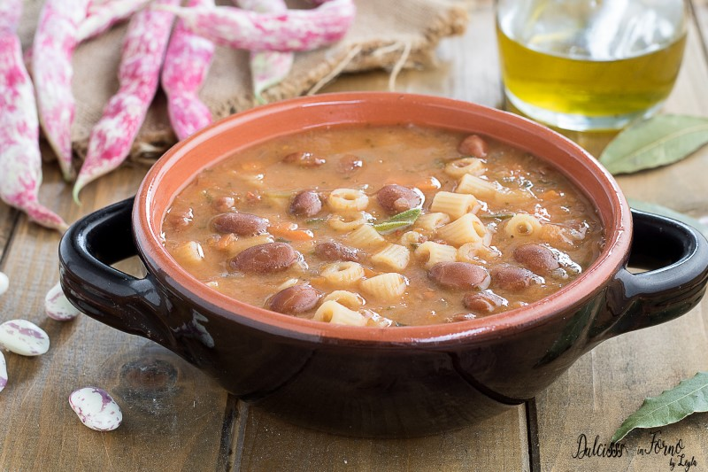

Tornar a l'índex
Pasta e faggioli, la gran desconeguda

Ingredients
- 200 g de mongetes blanques cuites (tipus cannellini o similar)
- 120 g de pasta petita (ditalini, macarrons petits o similars)
- 1 ceba petita
- 1 pastanaga
- 1 branca d’api
- 2 dents d’all
- 500 ml de brou de verdures
- Oli d’oliva verge extra
- Sal i pebre
- Romaní o farigola (opcional)
- Formatge parmesà ratllat (opcional, per servir)
Passos a seguir
- Pela i pica la ceba, la pastanaga, l’api i els alls.
- En una olla amb un raig d’oli d’oliva, sofregiu totes les verdures fins que estiguin toves (uns 10 minuts).
- Afegiu les mongetes cuites i remeneu bé. Reserveu-ne un cullerot per triturar més tard.
- Afegiu el brou de verdures i deixeu-ho coure 10 minuts a foc mitjà.
- Mentrestant, tritureu les mongetes reservades amb una mica de brou per obtenir una textura cremosa.
- Afegiu la crema de mongetes a l’olla i barregeu.
- Afegiu la pasta i coeu-la segons el temps indicat al paquet, remenant sovint perquè no s’enganxi.
- Ajusteu de sal, pebre i afegiu romaní o farigola si voleu aromes extra.
- Serviu ben calent amb un rajolí d’oli d’oliva i parmesà ratllat per sobre (opcional).